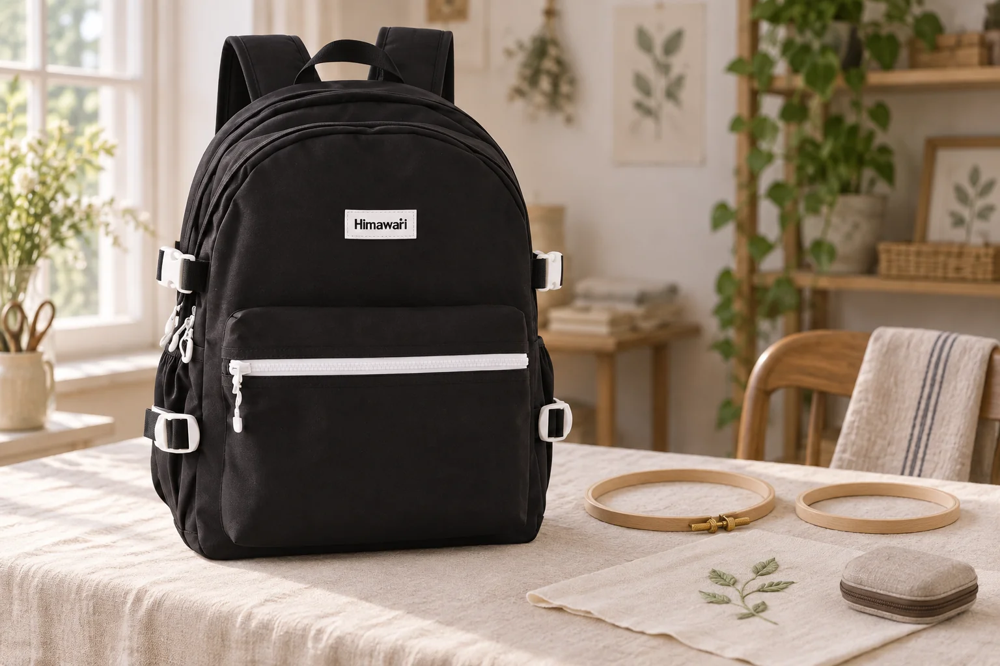

손자수를 쉬어갈 때: 수틀에서 천을 꺼내 백팩에 정리하기

잎사귀 몇 개를 수놓고 오늘 작업을 마칩니다. 실과 도구를 챙기는 동안 천은 둥근 수틀 안에 팽팽하게 남아 있습니다. 다음에 바로 이어 할지, 한동안 쉬게 될지에 따라 작업을 멈추는 정리도 달라집니다. 여기서는 나사로 여닫는 손자수 수틀을 기준으로 살펴봅니다.
다음 작업까지 얼마나 쉬는지 생각합니다
DMC의 자수 수틀 사용 안내는 작업물을 수틀에 오래 둔 채 보관하면 주름이 생기고 없애기 어려울 수 있다고 설명합니다. 긴 휴식에 들어갈 작업이라면 수틀에 끼운 상태 그대로 백팩에 넣어두기보다 천을 꺼내 정리하세요. 모든 수틀을 같은 방식으로 분리하는 것은 아닙니다. 기계 자수용 프레임이나 다른 고정 장치는 각 제품의 사용 안내를 기준으로 합니다.
천을 당기기 전에 고정부터 풉니다
나사식 손자수 수틀은 나사를 풀어 바깥 고리를 느슨하게 한 뒤 안쪽 고리와 나눕니다. 천을 가장자리에서 잡아당겨 억지로 빼지 말고, 수놓은 부분과 남은 실을 살펴 천천히 꺼내세요. 나사나 고리를 얼마나 풀어야 하는지는 본인 수틀의 안내를 따릅니다. 바늘은 먼저 정해둔 바늘집에 넣어, 천을 펼치는 손에 걸리지 않도록 따로 정리합니다.
수놓은 면을 접는 선과 구분합니다
꺼낸 천을 작은 파우치에 맞추려고 수놓은 면을 꼭 눌러 접지 않습니다. 사용하는 천과 실의 관리 방법을 확인하고, 펼친 상태로 둘 수 있는 케이스가 있는지 살펴보세요. 작업을 이어갈 위치는 별도 메모로 남겨도 좋습니다. 빈 수틀과 천을 따로 놓으면 다음 작업 때 어떤 면을 다시 고정할지 먼저 살필 수 있습니다. 수틀을 풀었다고 천의 기존 흔적이 모두 없어지는 것은 아닙니다.
No.9290은 도구 크기의 기준을 대신하지 않습니다
No.9290의 카탈로그 외부 크기는 가로 30 × 세로 42 × 폭 18cm입니다. 사진에서는 검정 몸체와 밝은 앞주머니 지퍼, 양쪽 흰 버클을 원본에 맞춰 표현했습니다. 수틀은 가방 밖에 분리해 놓았습니다. 원의 지름만 비교하지 말고 튀어나온 나사까지 포함한 실제 크기와 케이스 두께, 가방 입구를 확인하세요. 수틀을 안에 넣어 시험한 장면은 아닙니다.
참고·안내
- Himawari No.9290 제품 정보
- 실제 Himawari No.9290 원본을 참조한 AI 연출 사진입니다. 수틀과 자수 천은 별도 소품이며 수납을 시험한 사진이 아닙니다.
자주 묻는 질문
손자수 천을 수틀에 끼운 채 오래 보관해도 되나요?
DMC는 오래 끼워두면 제거하기 어려운 주름이 생길 수 있다고 안내합니다. 한동안 쉬는 작업은 수틀과 천의 사용 안내에 맞춰 분리해 정리하세요.
모든 자수 프레임을 나사로 풀면 되나요?
이 글은 나사식 손자수 수틀을 기준으로 합니다. 기계 자수용 프레임이나 다른 고정 장치에는 각 제품의 안내를 적용하세요.